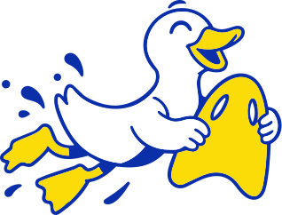
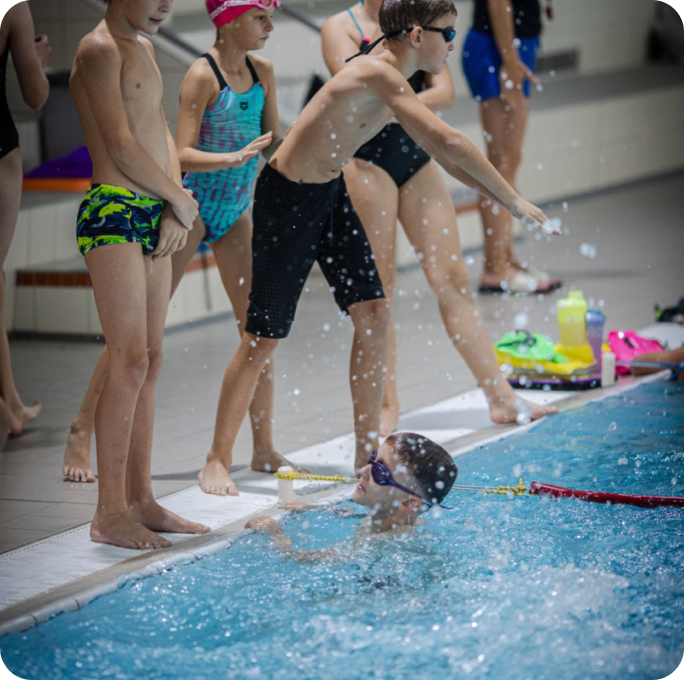
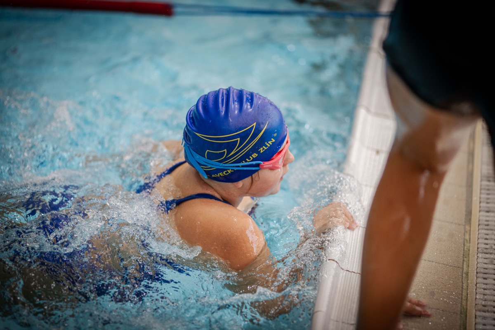
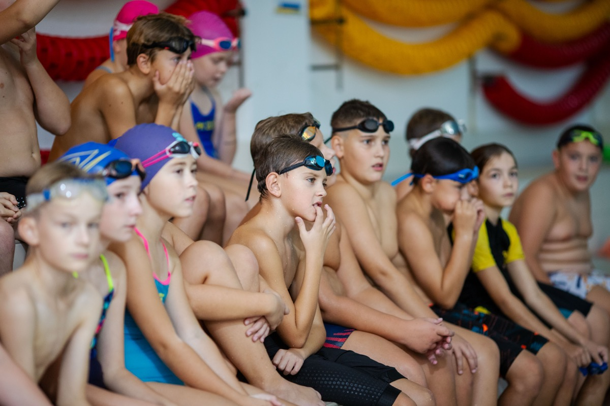
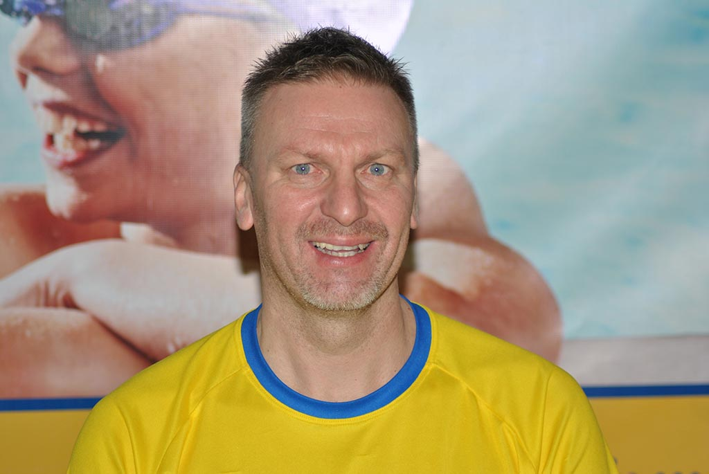
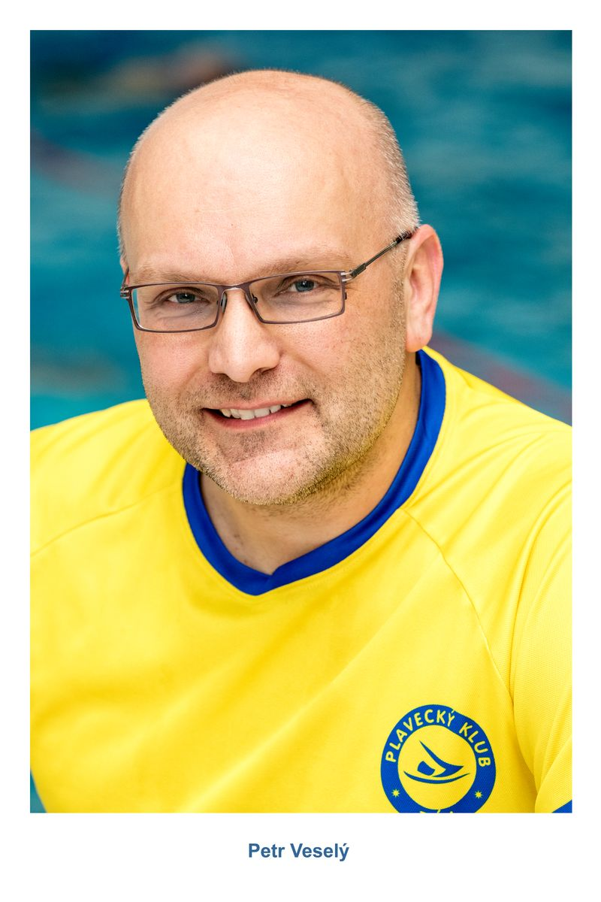
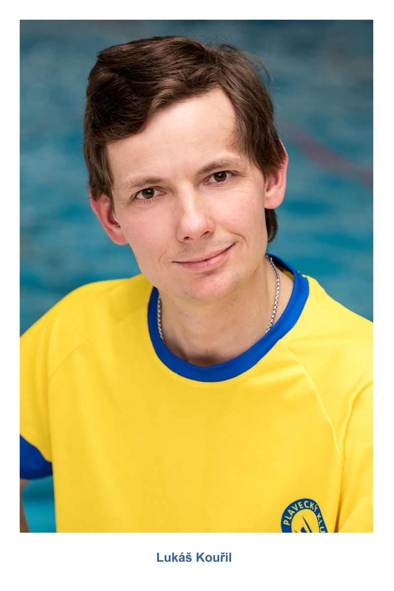
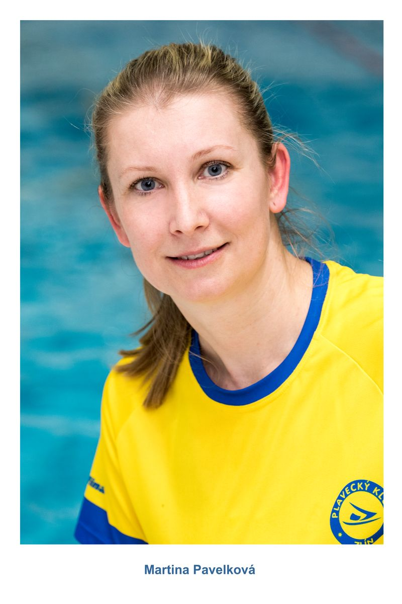

Klubové plavání
Pro děti 9 až 15 let, které nechodí do sportovních tříd a z přípravky už vyrostly.
7 200 Kč/ rok


Zdokonalovací kurzy plavání a základy plaveckého tréninku pro děti 9 až 15 let. Pro ty, kdo už plavou a chtějí trénovat v partě a vyzkoušet si první závody.
Program a cena
Pro děti 9 až 15 let, které nechodí do sportovních tříd a z přípravky už vyrostly.
Pro děti 9 až 15 let, které už plavou a chtějí se zlepšovat.

Aerobní, sprinterský a vytrvalostní trénink.

Zdokonalování všech plaveckých způsobů, nácvik startů a obrátek.

Plavání s pomůckami a hry, aby trénink bavil.
Kromě tréninků i společné víkendové akce celé party.


Z klubového plavání vyrůstají budoucí trenéři přípravky.
Info leták
Rozvrh, ceny, co s sebou a kontakty přehledně na jednom místě. Leták si můžete stáhnout, vytisknout nebo poslat dál.
Tréninky vedou trenéři s licencí.

Jiří Šup

Petr Veselý st.

Lukáš Kouřil

Martina Pavelková
Závody a akce klubového plavání. Ostatní programy najdete ve filtru.
Přihlášky přes trenéra skupiny. Startovné 100 Kč.
Štafety ve smíšených družstvech, na závěr vánoční posezení.
Tréninky ve vodě i na suchu. Přihlášky u trenérů.

Neplavec neuplave bez pomůcek pár metrů. Mírně pokročilý uplave 25 m. Pokročilý zvládá víc délek. Po prvních lekcích to potvrdí trenér.
Odpověď zatím není v návrhu, doplní klub.
Odpověď zatím není v návrhu, doplní klub.
Odpověď zatím není v návrhu, doplní klub.
Odpověď zatím není v návrhu, doplní klub.

20. 10. 2026
Přihlášky na předvánoční závody přípravky posílejte trenérům do konce listopadu.

12. 10. 2026
Nejmenší si zvykli na vodu a zvládli první splývání.

28. 9. 2026
Vypsali jsme nové termíny lekcí, kde rodiče plavou spolu s dětmi.